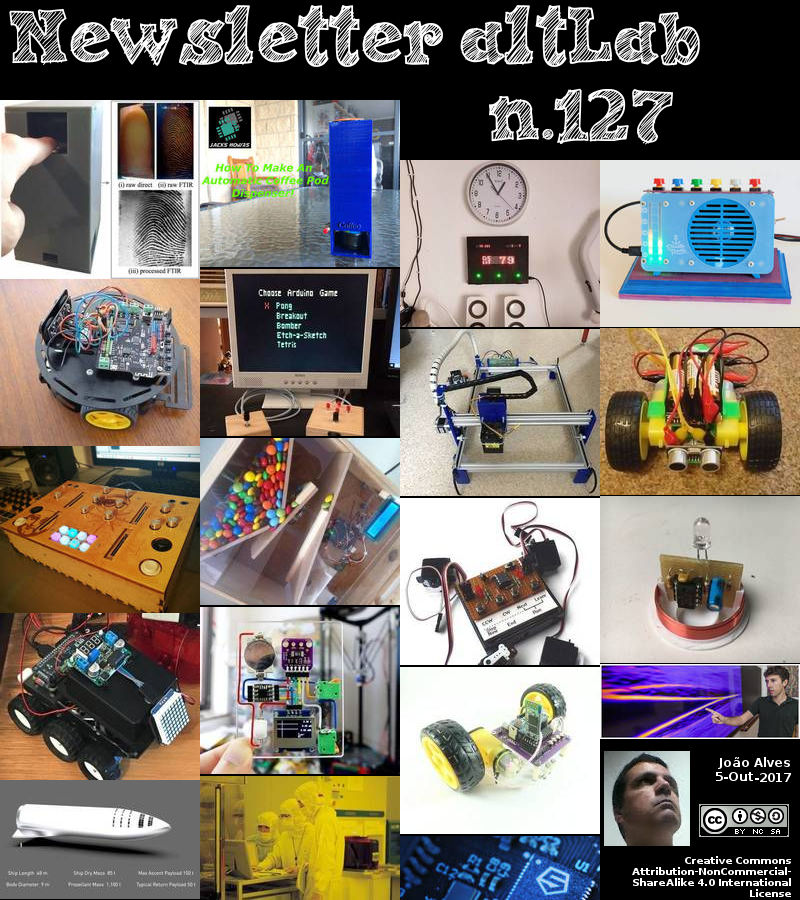

2017-10-05 - Nº 127


Editorial
Esta é a Newsletter Nº 127 que se apresenta com o mesmo formato que as anteriores. Se gostar da Newsletter partilhe-a!
Todas as Newsletters encontram-se indexadas no link.
Esta Newsletter tem os seguintes tópicos:
Faz hoje anos que nascia, em 1781, Bernard Bolzano. Este Matemático e teólogo checo que fez contribuições significativas tanto para a matemática como para a teoria do conhecimento. Ele forneceu uma prova mais detalhada para o teorema binomial em 1816 e sugeriu os meios de distinguir entre classes finitas e infinitas. Bolzano ajudou a estabelecer as bases da análise (por exemplo, o teorema de Bolzano-Weierstrass), tentou elaborar o método matemático e antecipou algumas idéias básicas da teoria dos conjuntos de Cantor.
Faz também anos hoje que nascia, em 1864, Louis Lumière. Este inventor francês, trabalhou com seu irmão Auguste, para criar equipamentos pioneiros de filmagem. Louis inventou o projector e a câmara de duas funções "Cinématographe" de 25 lb, que melhoraram o Kinetoscope de Thomas Edison, adicionando um mecanismo de movimento de filme intermitente (baseado na máquina de costura). A 13 de Fevereiro de 1895, eles patentearam em conjunto o dispositivo (como era costume). Foi demonstrado pela primeira vez a uma audiência convocada em 22 de Março de 1895, mostrando seu primeiro filme para um público convidado que viu "La Sortie des ouvriers de l'usine Lumière" mostrando trabalhadores que saem da fábrica de Lumière. A primeira exibição pública de sucesso em 28 de Dezembro de 1895 de seus filmes em Paris foi o "nascimento" do cinema.
Faz igualmente anos hoje que nascia, em 1882, Robert H. Goddard. Este físico e engenheiro de foguetes, e inventor norte-americano ficou conhecido como o "pai do foguetão moderno". Desde os 17 anos, Goddard estava interessado em foguetes (1899) e, em 1908, realizou testes estáticos com pequenos foguetes de combustível sólido. Ele desenvolveu a teoria matemática da propulsão do foguete (1912) e provou que os foguetes funcionariam no vácuo para o vôo espacial (1915). Durante a Primeira Guerra Mundial, Goddard desenvolveu armas de foguete. Ele escreveu um Método de Alcance de Altitudes Extremas, em 1919. Durante as duas décadas seguintes, ele produziu uma série de grandes foguetes de combustível líquido na sua fábrica de foguetes em Roswell. Durante a Segunda Guerra Mundial, ele desenvolveu a descolagem assistida por foguetes de aviões de transporte da Marinha e motores de foguete de combustível de propulsão variável. Quando morreu, Goddard tinha 214 patentes em foguetões.
Faz hoje anos que nascia, em 1889, Dirk Coster. Este físico holandês que (trabalhando com Georg von Hevesy) descobriu o elemento háfnio aplicando habilmente o método de análise de raios X de Henry Moseley para distinguir as linhas espectrais do háfnio, apesar da distracção de algumas linhas estranhas. Niels Bohr sugeriu que eles observassem de perto um minério de zircónio, um homólogo, para o novo elemento. Bohr ouviu por telefone seu sucesso no dia da sua conferência do Prémio Nobel (11 de dezembro de 1922), em que ele anunciou sua descoberta. O elemento, no.72, foi nomeado para Hafnia, o antigo nome romano para Copenhaga. Anteriormente, trabalhando no laboratório de Bohr em Copenhaga, Coster usou raios-X para fornecer dados experimentais para apoiar a teoria da estrutura atómica de Bohr e a tabela periódica.
Por fim, faz anos hoje que nascia, em 1930, Reinhard Selten. Este Matemático alemão que partilhou o Prémio Nobel de Economia de 1994 com John F. Nash e John C. Harsanyi pelo desenvolvimento da teoria dos jogos, um ramo de matemática que examina rivalidades entre concorrentes com interesses mistos. Selten conseguiu um avanço decisivo na teoria dos jogos: a introdução dos conceitos de equação subjuntiva perfeita e perfeita reduziu o conjunto da Equillibria de Nash drasticamente excluindo ameaças que não são credíveis. Assim, podem ser feitas previsões mais precisas e sensíveis para muitos jogos, e. mercados. Além disso, a teoria do jogo encontrou aplicações em todas as ciências sociais e até mesmo em biologia.
Na semana que passou a SpaceX anunciou a intenção de substituir o Falcon 9 e Falcon Heavy e o Dragon por uma nova nave espacial. O plano é, em parte, ter um veículo menor do que o originalmente planeado para uso em missões de Marte, que é "ainda muito grande", mas também é prático para uso para "tudo o que é necessário para uma maior actividade em órbita terrestre".
Também nesta semana que passou Elon Musk que há muito sonha em criar uma colónia humana em Marte, está a planear construir uma nova nave designada por "BFR" capaz de viajar até qualquer lugar da Terra em menos de uma hora. Se o conceito se tornar realidade, Musk disse que uma viagem de Nova York a Xangai pode ser feita em cerca de 30 minutos. O anúncio de surpresa significa que a sua Space Exploration Technologies Corp., que já abanou a indústria aeroespacial com lançamentos reutilizáveis, planeia transportar seres humanos não apenas para planetas distantes, mas também sobre este, criando um desafio potencialmente competitivo para a indústria aérea comercial.
E fez ontem 60 anos que foi lançado o famoso satélite Sputnik-1. Com um diâmetro de 58 centímetros e um peso de cerca de 84 Kg este foi o primeiro satélite artificial da Terra. Equipado com 4 antenas de rádio era capaz de emitir sinais de rádio. O satélite viajava a cerca de 2 mil quilómetros por hora e completava uma orbita à terra em cerca de 96.2 minutos. Transmitiu sinais durante 21 dias. Foi destruído na reentrada na atmosfera da Terra a 4 de Janeiro de 1958, depois de viajar cerca de 70 milhões de quilómetros em 1440 orbitas a volta da Terra.
Na Newsletter desta semana apresentamos diversos projetos de maker assim como vários modelos 3D que poderão ser úteis. É apresentada a revista newelectronics de 26 de Setembro.
 João Alves ([email protected])
João Alves ([email protected])
O conteúdo da Newsletter encontra-se sob a licença  Creative Commons Attribution-NonCommercial-ShareAlike 4.0 International License.
Creative Commons Attribution-NonCommercial-ShareAlike 4.0 International License.
Novidades da Semana
SpaceX aims to replace Falcon 9, Falcon Heavy, and Dragon with one spaceship
"When Elon Musk took the stage at the International Astronautical Congress today to expand on the Mars plan he revealed at the event last year, he started where people had the most questions last time around: How will you pay for trips to Mars? The answer, Musk said, had a lot to do with simplifying the companies lineup, and rendering redundant some of its current products. To do that, it’ll try to replace all of its current launch vehicles, including Falcon 9, and the larger Falcon Heavy it hopes to launch this year, along with its Dragon transportation capsule with one ship, and one booster. “I think we have figured out how to pay for it – this is very important,” Musk said, to chuckles from the crowd. The plan is in part to have a smaller vehicle than was originally planned for use in Mars missions, which is “still pretty big,” but it’s also practical for use for “everything that’s needed in greater Earth orbit activity,” Musk said. “Essentially we want to make our current vhielces redundant,” he added." [...]
Musk Wants to Build a Rocket That Will Get You Anywhere on Earth in an Hour
"Entrepreneur Elon Musk, who has long dreamed of creating a human colony on Mars, is planning to build a new rocket ship code named “BFR” capable of traveling anywhere on Earth in under an hour. If the concept becomes reality, Musk said a journey from New York to Shanghai can be done in about 30 minutes. The surprise announcement means that his Space Exploration Technologies Corp., which has already disrupted the aerospace industry with reusable launches, plans to ferry humans not just to distant planets but across this one as well, setting up a potentially competitive challenge to the commercial airline industry. “If we are going to places like Mars, why not Earth?” Musk said Friday at the 68th International Astronautical Congress in Adelaide, Australia. Toward the end of Musk’s highly technical presentation, animation played on a big screen behind him, showing scores of people getting on a high-speed ferry in New York, then boarding the BFR on a platform in the water. The spaceship then travels to Shanghai in roughly half an hour." [...]
60 years ago, Sputnik shocked the world and started the space race
"It was 8:07 p.m. on a Friday night in Riverhead, Long Island, when the operators at an RCA Communications outpost picked up a signal that had never been heard before on Earth. A sharp, insistent beep sang out over short-wave radios, filling up our ears with the knowledge that humans had succeeded in sending something outside our protective blanket of nitrogen, oxygen, and carbon dioxide. Within hours of the announcement, diligent searchers of the skies—all volunteer amateur astronomers who had trained for this moment—assembled, and confirmed with their eyes what our ears already knew. In Terre Haute, Indiana; Whittaker, California; and Columbus, Ohio, these stargazers tracked a faintly shining object as it sped around Earth at 18,000 miles per hour, heading from west to east across the darkened sky. The appearance of a second, 184 pound moon in the skies above America shocked the nation, not in the least because our new moonlet had been sent there by the rival Soviets. Newspaper reports at the time asked the man who oversaw America’s yet-to-launch satellite program, Rear Admiral Rawson Bennett, for a reaction to Sputnik’s launch." [...]
Outras Notícias
Scanning the Dutch navy
"Keeping its vessels in top condition is a critical aspect of a naval force’s readiness, but to do so each part, little or big, needs full attention. Claire Apthorp looks at a project to scan the entire Dutch Navy in 3D. The Royal Netherlands Navy contracts work for the maintenance of its vessels and submarines to Dutch organisation Marinebedrijf Koninklijke Marine. In addition to maintaining the vessels, Marinebedrijf Koninklijke Marine is responsible for creating new parts for the ships to replace damaged parts, and carrying out modifications to on-board components when required, from everything to the hull to weapons systems and engines. In order to speed up its servicing, Marinebedrijf Koninklijke Marine turned to Artec 3D, a company that produces 3D scanners that allow maintenance personnel to reverse engineer parts for vessels that need to be replaced, for which the drawings or 3D CAD files are not accessible. The Artec Eva and Spider 3D handheld scanners used for this project are structured light scanners." [...]
mbed OS 5.6.1 released
"We are pleased to announce the mbed OS 5.6.1 release is now available. This release includes new target support for the L-TEK FF1705, a critical workaround to issue #5079 (MD5, SHA1 and SHA256 hardware acceleration not working for STM32F439xI), plus numerous bug fixes to improve the code quality and stability. Here is a full list of all changes and fixes in this release..." [...]
Arduino IDE 1.8.5: Hotfix For MacOs High Sierra Users
"In case you haven’t noticed, our team has just released Arduino IDE 1.8.5! This time the changelog is fairly small, as it mainly solves a (rather important) problem being encountered by macOS users who just updated to High Sierra (10.13). If you are not using English as system language, any version of Arduino you launch will lack the menu in the system bar. Every Java application is experiencing the same problem, so it will probably be solved by Apple in the near future. In the meantime, IDE 1.8.5 recognizes when the menu bar is not being displayed and replaces it with a Windows-style one. It may not be the prettiest thing, but at least it works!" [...]
TSMC is building 'world's first' 3nm fab in Taiwan
"TAIWAN SEMICONDUCTOR MANUFACTURING CO (TSMC) Taiwan is building the 'world's first' semiconductor plant that will be able to support the creation of 3nm node silicon chips. While the company has been talking about building the 3nm fab for a while, recent rumours seemed to give the impression that fab would be built in the US, after President Donald Trump's claims that more digital manufacturing was welcome in the country. However, TSMC has made it clear, according to DigiTimes, that it'll be staying in Taiwan at the Tainan Science Park to "fully leverage the company's existing cluster advantage" and see the benefit of a "comprehensive supply chain". The firm already operates a 5nm fab in the same location, so it's not an illogical leap, though TSMC hasn't started producing 5nm chips yet. Its website saying that these are "scheduled to start risk production in the second quarter of 2019". IBM, meanwhile, has successfully created 5nm silicon chips already, having revealed back in June that it had used silicon nanosheets in a "Gate All Around" field-effect transistor (GAAFET) setup." [...]
Google Clips Captures and Curates Life’s Meaningful Moments Autonomously with Intel’s Movidius VPU Inside
"Intel announced that the new Google Clips* hands-free camera uses the Movidius™ Myriad™ 2 vision processing unit (VPU) for on-device artificial intelligence (AI) processing. Google Clips captures and curates motion photos of a person’s family, friends and pets, making them accessible in the Clips app. Google’s advanced machine learning algorithms run in real time directly on the Clips camera with the ultralow-power Movidius VPU inside. By enabling on-board processing, rather than in the cloud, Google is able to improve upon power consumption and latency and enable offline use. “To bring our vision for Clips to life, we’ve been working on integrating Intel’s Movidius technology within Clips to give people many of the benefits of machine learning directly on their device,” said Google Clips product lead Juston Payne. “On-device processing gives people a lengthy battery life, speedy access to their clips, and the ability to use the camera without an internet connection." [...]
NXP® Unveils Highest Performance Layerscape® Networking and Data Center Offload System-on-Chip Solution
"NXP Semiconductors N.V. (NASDAQ:NXPI), a worldwide leader in advanced secure connectivity solutions, today announced the highest performance member of the Layerscape family, the LX2160A SoC. The LX2160A is specifically designed to enable challenging high-performance network applications, network edge compute, and data center offloads. Trusted and secure execution of virtualized cloud workloads at the edge is driving new distributed computing paradigms. The LX2160A features sixteen high-performance Arm Cortex®-A72 cores running at over 2 GHz in a sub 30-watt power envelope, supporting both the 100 Gbit/s Ethernet and PCIe Gen4 interconnect standards. In addition, it provides L2 switching at wire rate and includes acceleration for data compression and 50 Gbit/s IPSec cryptography. The NXP Layerscape processor family, stretching from single-core sub-1W processors to the 16-core LX2160A, provides the broadest family of 64-bit Arm processors available1." [...]
Arduino Announces ARM Partnership
"Dear Arduino Community, Back in July, we announced that the original Arduino founders regained full control of Arduino as a company. It was the culmination of a project that lasted several months, which required a tremendous amount of effort in finding the right partner that could help us make it happen while keeping the spirit of Arduino true to itself. Throughout the litigation we dreamed of reclaiming control of the company, bringing it back to its original principles while designing a strategy that would allow us to tackle the challenges of the contemporary IoT world. In order to make this a reality, we needed a partner that would provide us with the resources to regain full ownership of Arduino as a company while keeping it independent and true to its values of openness. It wasn’t easy, but more than a year ago, in the middle of the litigation, we started a conversation with an important technology company that is an essential building block of today’s digital world: Arm. During a very hot day in spring I visited California to meet with Arm." [...]
SiFive Launches First RISC-V Based CPU Core with Linux Support
" SiFive, the first fabless provider of customized, open-source-enabled semiconductors, today announced the availability of U54-MC Coreplex IP, the industry’s first RISC-V based, 64-bit, quadcore real-time capable application processor with support for full featured operating systems such as Linux. The free and open RISC-V architecture, which is supported by an ecosystem comprising more than 70 companies, has seen tremendous growth in the embedded segment. The release of the U54-MC Coreplex marks the architecture’s expansion into the application processor space – opening entirely new use cases for RISC-V. RISC-V is a free and open instruction set architecture (ISA) designed to enable chips across the full spectrum of computing devices, from embedded devices to the data center. As the first RISC-V application processor capable of running embedded Linux, the standard U54-MC Coreplex contains four U54 CPUs along with a single E51 CPU, and is the first commercial RISC-V core to include multicore support and cache coherence. Each U54 CPU utilizes a highly efficient five-stage in-order pipeline. The U54 cores support the RV64GC ISA, which is expected to be the standard for Linux-based RISC-V devices." [...]
SpaceX unveils Mars city plan, will fly two cargo missions by 2022
"SpaceX hopes to land at least two cargo missions to Mars a mere five years from now. The aerospace company's chief, Elon Musk, discussed its plans at the International Astronautical Congress (IAC) in Australia. He talked about how SpaceX intends to use the BFR, the massive rocket it's developing, to fly Martian settlers to their new home and to take people anywhere on Earth in under an hour. In addition to landing two cargo missions on the red planet by 2022, it hopes to be able to confirm sources of water and potential hazards by that time. SpaceX also plans to start building mining, power and life support infrastructure that year to prepare for the first settlers that could arrive as soon as 2024. Musk said SpaceX aims to take the first settlers aboard two crewed flights to the red planet by 2024." [...]
Ciência e Tecnologia
New ’building material’ points toward quantum computers
"A Danish-American research team has shown that it is possible to produce ‘Majorana particles’ in a new ‘building material’. The research, led by scientists from Niels Bohr institute, University of Copenhagen, paves the road for new types of experiments - and at the same time represents an important contribution to the construction of the information circuits of tomorrow. Ever since Ettore Majorana – legendary and mythical Italian physicist – back in 1937 suggested the existence of a particle that is also its own anti-particle, scientists have been searching for the ‘Majorana particle’, as it is has come to be known. This far the search has been to no avail A team of scientists from Center for Quantum Devices at Niels Bohr Institute (NBI) and from Purdue University, USA, have – however – recently contributed to the advancement of Majorana research. Not by finding the elusive particle itself, but by figuring out how to produce a material in which electrons behave in accordance with the theoretical predictions for Majorana particles. The results of the research project are published in this week issue of the scientific journal Physical Review Letters." [...]
The 3D selfie is here
"Computer scientists at the University of Nottingham and Kingston University have solved a complex problem that has, until now, defeated experts in vision and graphics research. They have developed technology capable of producing 3D facial reconstruction from a single 2D image - the 3D selfie. Their new web app allows people to upload a single colour image and receive, in a few seconds, a 3D model showing the shape of their face. People are queuing up to try it and so far, more than 400,000 users have had a go. You can do it yourself by taking a selfie and uploading it to their website. The research – 'Large Pose 3D Face Reconstruction from a Single Image via Direct Volumetric CNN Regression’ – was led by PhD student Aaron Jackson and carried out with fellow PhD student Adrian Bulat both based in the Computer Vision Laboratory in the School of Computer Science." [...]
Biodegradable microsensors for food monitoring
"A new generation of microsensors could provide the vital link between food products and the Internet of Things. ETH researchers have developed an ultra-thin temperature sensor that is both biocompatible and biodegradable. Nowadays microsensors are already used in many different applications, such as the detection of poisonous gases. They are also integrated into miniaturised transmitter/receiver systems, such as the ubiquitous RFID chips. However, as the sensors often contain precious metals that are harmful to both the environment and human health, they are not suitable for medical applications involving direct contact with the human body or for inclusion in food products. There is therefore a high level of interest, both in research and industry, in developing microsensors made from non-toxic materials that are also biodegradable." [...]
New Radar Sensor Provides Clear Vision in Any Weather
"DARPA’s Video Synthetic Aperture Radar (ViSAR) program recently completed flight tests, successfully demonstrating a new sensor that can capture real-time video through clouds. The ViSAR program, which began in 2013, has been developing an Extremely High Frequency (EHF) targeting sensor to operate through clouds as effectively as current electro-optical and infrared (EO/IR) sensors operate in clear weather. The program’s goal is to develop a cloud-penetrating EHF sensor in a moveable gimbal that could be mounted on a variety of aerial platforms to provide high-resolution, full-motion video for engaging moving ground targets in all weather conditions—cloudy or clear. “The recent flight tests of the ViSAR sensor marked a major program milestone toward our goal, proving that we can take uninterrupted live video of targets on the ground even when flying through or above clouds,” said Bruce Wallace, program manager in DARPA’s Strategic Technology Office. “The EO/IR sensors on board the test aircraft went blank whenever clouds obscured the view, but the synthetic aperture radar tracked ground objects continuously throughout the flight.” Wallace noted that cloud-penetrating radar—such as from space or other operational systems—has existed in other formats, but there has not been a synthetic aperture sensor, which can fit in a standard EO/IR sensor gimbal on aircraft and maintain frame rates fast enough to track maneuvering targets on the ground. The recent ViSAR tests took place on a modified DC-3 aircraft that flew at low and medium altitudes, allowing researchers to collect and compare data from the ViSAR, EO, and IR sensors mounted on standard sensor gimbals." [...]
Ultra-Fast and Ultra-Sensitive Hydrogen Sensor
"A KAIST team made an ultra-fast hydrogen sensor that can detect hydrogen gas levels under 1% in less than seven seconds. The sensor also can detect hundreds of parts per million levels of hydrogen gas within 60 seconds at room temperature. A research group under Professor Il-Doo Kim in the Department of Materials Science and Engineering at KAIST, in collaboration with Professor Reginald M. Penner of the University of California-Irvine, has developed an ultra-fast hydrogen gas detection system based on a palladium (Pd) nanowire array coated with a metal-organic framework (MOF). Hydrogen has been regarded as an eco-friendly next-generation energy source. However, it is a flammable gas that can explode even with a small spark. For safety, the lower explosion limit for hydrogen gas is 4 vol% so sensors should be able to detect the colorless and odorless hydrogen molecule quickly." [...]
Computer scientists address gap in messaging privacy
"Researchers have developed a solution to a longstanding problem in the field of end-to-end encryption, a technique that ensures that only sender and recipient can read a message. With current end-to-end encryption, if an attacker compromises a recipient’s device, they can then put themselves in a position to intercept, read and alter all future communications without sender or recipient ever knowing. The new protocol, published in IEEE Transactions on Information Forensics and Security, forces attackers to leave evidence of any such activity and alerts users to take action. Dr. Jiangshan Yu at the University of Luxembourg, Professor Mark Ryan at the University of Birmingham and Professor Cas Cremers at the University of Oxford, were motivated by the discovery of mass software vulnerabilities, such as the Heartbleed bug, that make the majority of devices vulnerable to compromise. Dr Yu explained, “There are excellent end-to-end encryption services out there, but by definition they rely on your device itself remaining secure; once a device has been compromised there’s little we can do. That’s the problem we wanted to solve.” Following Edward Snowden’s revelations about government mass surveillance, end-to-end encryption is now widely available through services such as Facebook’s WhatsApp." [...]

Introducing a new robotic class with abilities out-performing existing machines or even biological organisms
"Swarm intelligence refers to natural and artificial systems comprising many individuals that coordinate using decentralised control and self-organisation. The EU-funded project, has designed the first self-assembling multirobot system able to display sensorimotor coordination equivalent to that observed in monolithic robots. Robots tend to be controlled by sensors and actuators connected to a central processing unit – a sort of robotic nervous systems. Traditionally, flexibility in the system is limited as these nervous systems are mapped strictly to the shape of the robot. The development of a more modular system formed instead by multiple units would allow more adaptability. Indeed, in principle robots could display more lifetime morphological adaptation than natural organisms, with robots of different capabilities, shapes, and sizes, configuring themselves as required." [...]
Developing new magnetic device materials
"Assistant professor of electrical engineering Luqiao Liu is developing new magnetic materials, known as antiferromagnets, that can be operated at room temperature by reversing their electron spin and can serve as the basis for long-lasting, spintronic computer memory. Stephanie Bauman, an intern in the Materials Processing Center and Center for Materials Science and Engineering Summer Scholars program, spent her internship making and testing these new materials, which include manganese gallium samples. “In our project we're working on the area of spintronics, anti-ferromagnetic devices that switch electron spin controlled by a current,” said Bauman, a University of South Florida physics major. “I'm working with a lot of new equipment like the vibrating sample magnetometer and the sputterer to lay down thin films.” “I’ve been working on a daily basis with Joe Finley, who is a graduate student here, and he’s been a explaining a lot of things to me,” Bauman said. “It’s a very dense subject matter. And he does help me out a lot when we go to things like the X-ray diffraction room, and he shows me how the graphs can interpret how thick each layer of the thin layers of the devices are." [...]
Team builds flexible new platform for high-performance electronics
"A team of University of Wisconsin–Madison engineers has created the most functional flexible transistor in the world — and with it, a fast, simple and inexpensive fabrication process that’s easily scalable to the commercial level. It’s an advance that could open the door to an increasingly interconnected world, enabling manufacturers to add “smart,” wireless capabilities to any number of large or small products or objects — like wearable sensors and computers for people and animals — that curve, bend, stretch and move. Transistors are ubiquitous building blocks of modern electronics. The UW–Madison group’s advance is a twist on a two-decade-old industry standard: a BiCMOS (bipolar complementary metal oxide semiconductor) thin-film transistor, which combines two very different technologies — and speed, high current and low power dissipation in the form of heat and wasted energy — all on one surface. As a result, these “mixed-signal” devices (with both analog and digital capabilities) deliver both brains and brawn and are the chip of choice for many of today’s portable electronic devices, including cellphones. “The industry standard is very good,” says Zhenqiang (Jack) Ma, the Lynn H. Matthias Professor and Vilas Distinguished Achievement Professor in electrical and computer engineering at UW–Madison." [...]
Good vibrations for the future of computing
"A vibration-driven logic gate could form the basis for the next generation of efficient, low-power computers. Vibrating mechanical switches that can be cascaded to perform complex computational operations could take computing significantly further than today’s technologies. KAUST researchers have demonstrated an alternative technology based on mechanical vibrations. The microcomputer processors found inside every computer, mobile phone and microwave comprise mind-bogglingly complex networks of millions or billions of microscopic transistors—electrical switches that turn on when a current flows across their terminals. These transistors are networked together to construct logic gates that perform operations, such as AND (when two inputs are on) and OR (when either input is on). In turn, these logic gates are connected to much larger networks to allow increasingly complex operations." [...]
Using elastomer films to generate electricity
"Water is still the most important source of renewable energy in Bavaria, Germany, accounting for some 33 percent of all renewable energy produced in the region, as showed by the Bavarian Energy Map. But conventional hydroelectric plants, especially micro hydro generators, are a subject of controversy due to their low output volumes and their interference with the ecosystem. Fraunhofer researchers are working on an environmentally friendly alternative: in the future, innovative elastomer materials are set to convert the mechanical energy produced by flowing water in small rivers directly into electrical energy. Under its energy policy, the Bavarian State Government has defined new objectives for the transition to a greener energy economy: by 2025, some 40 percent of electricity required in Bavaria should be supplied by local renewable energy sources. In the DEGREEN project (see the box “The DEGREEN project at a glance”), the Fraunhofer Institute for Silicate Research ISC is pursuing an innovative approach to renewable energy generation using hydropower. To this end, the Würzburg-based researchers are using highly flexible and ultra-thin elastomer films that work as capacitors." [...]
Software Developed at Brookhaven Lab Could Advance Synchrotron Science Worldwide
"Scientists at the U.S. Department of Energy’s (DOE) Brookhaven National Laboratory have developed new software to streamline data acquisition (DAQ) at the National Synchrotron Light Source II (NSLS-II), a DOE Office of Science User Facility. Called “Bluesky,” the software significantly eases the process of collecting and comparing data at NSLS-II, and could be used to facilitate scientific collaboration between light sources worldwide. NSLS-II is one of the most advanced synchrotrons in the nation, and as the facility continues to expand, researchers need dynamic DAQ software to effectively capture and process the large volume and variety of data their experiments produce. Typically at synchrotrons, each beamline (experimental station) uses DAQ software that was developed specifically for that beamline. These beamline-specific types of software are often incompatible with each other, making it difficult for scientists to compare data from different beamlines, as well as other light sources. That’s why Brookhaven’s Data Acquisition, Management and Analysis (DAMA) group developed Bluesky." [...]
Memristors To Make Computers Faster, Smaller And More Efficient
"Researchers Develop New Memristor Prototype Capable of Performing Complex Operations at High-Speed and Low Power, Could Lead to Advancements in Internet of Things, Portable Healthcare Sensing and other Embedded Technologies Computer circuits in development at the Khalifa University of Science and Technology could make future computers much more compact, efficient and powerful thanks to advancements being made in memory technologies that combine processing and memory storage functions into one densely packed “memristor.” Enabling faster, smaller and ultra-low-power computers with memristors could have a big impact on embedded technologies, which enable Internet of Things (IoT), artificial intelligence, and portable healthcare sensing systems, says Dr. Baker Mohammad, Associate Professor of Electrical and Computer Engineering. Dr. Mohammad co-authored a book on memristor technologies, which has just been released by Springer, a leading global scientific publisher of books and journals, with Class of 2017 PhD graduate Heba Abunahla. The book, titled Memristor Technology: Synthesis and Modeling for Sensing and Security Applications, provides readers with a single-source guide to fabricate, characterize and model memristor devices for sensing applications. The pair also contributed to a paper on memristor research that was published in IEEE Transactions on Circuits and Systems I: Regular Papers earlier this month with Class of 2017 MSc graduate Muath Abu Lebdeh and Dr. Mahmoud Al-Qutayri, Professor of Electrical and Computer Engineering.PhD student Yasmin Halawani is also an active member of Dr. Mohammad’s research team. Conventional computers rely on energy and time-consuming processes to move information back and forth between the computer central processing unit (CPU) and the memory, which are separately located. A memristor, which is an electrical resistor that remembers how much current flows through it, can bridge the gap between computation and storage." [...]
The global quantum race is on
"Huge investments are being made in quantum technology around the world. Denmark is among the nations that have joined the global race, where the winners will be those who master the peculiar science of quantum mechanics while successfully making a business out of it. From a quiet existence in physicists’ laboratories, hidden away as basic research and experiments, over just a few short years quantum mechanics has become the subject of much attention from other quarters. Quantum mechanics is now being courted by many industries from all over the world. Companies and nations are investing heavily in the field. The goal is to be among the first to exploit new breakthroughs in quantum mechanics for commercial purposes, i.e." [...]
Two intelligent vehicles are better than one
"Intelligent vehicles get their intelligence from cameras, Light Detection and Ranging (LIDAR) sensors, and navigation and mapping systems. But there are ways to make them even smarter. Researchers at EPFL are working to improve the reliability and fault tolerance of these systems by combining the data they gather with that from other vehicles. This can, for example, extend the field of view of a car that is behind another car. Using simulators and road tests, the team has developed a flexible software framework for networking intelligent vehicles so that they can interact. “Today, intelligent vehicle development is focused on two main issues – the level of autonomy and the level of cooperation,” says Alcherio Martinoli, who heads EPFL's Distributed Intelligent Systems and Algorithms Laboratory (DISAL)." [...]
Code Quality Research: Functional Languages Beat Procedural/Object-Oriented
"Academic researchers have published a study investigating the effect of programming languages on software quality, concluding the issue is hard to quantify but also identifying significant findings, such as functional languages having an edge over procedural/object-oriented languages. The research -- "A Large-Scale Study of Programming Languages and Code Quality in GitHub" -- was just published in the October edition of Communications of the ACM (Association for Computing Machinery) by academicians at the University of Virginia and University of California, Davis. In attempting to gauge how code quality is influenced by the type of programming language used, the researchers analyzed more than 700 GitHub projects containing some 63 million lines of source code. They concluded the question is quite complicated, influenced by many interacting factors, and difficult to empirically evaluate. Nevertheless, they identified several "significant" effects (at least statistically) that they in turn characterized as "small" or "modest," implying other factors may be more important. "By triangulating findings from different methods, and controlling for confounding effects such as team size, project size, and project history, we report that language design does have a significant, but modest effect on software quality," the paper states." [...]
Bristol scientists pinpoint the singularity for quantum computers
"Researchers from the University of Bristol have discovered that super-powerful quantum computers, which scientists and engineers across the world are racing to build, need to be even more powerful than previously thought before they can beat today’s ordinary PCs. Quantum computers are a new type of machine that operate on quantum mechanical hardware and are predicted to give enormous speed advantages in solving certain problems. Research groups at leading universities and companies, including Google, Microsoft and IBM, are part of a worldwide race to realise the first quantum computer that crosses into the ‘quantum computational singularity’. This represents a problem so complex that today’s top supercomputer would take centuries to find a solution, while a quantum computer could crack it in minutes. Now a team of scientists from Bristol have discovered that the boundary to this singularity is further away than previously thought. The research is reported this week in Nature Physics." [...]
Fast-moving magnetic particles could enable new form of data storage
"New research has shown that an exotic kind of magnetic behavior discovered just a few years ago holds great promise as a way of storing data — one that could overcome fundamental limits that might otherwise be signaling the end of “Moore’s Law,” which describes the ongoing improvements in computation and data storage over recent decades. Rather than reading and writing data one bit at a time by changing the orientation of magnetized particles on a surface, as today’s magnetic disks do, the new system would make use of tiny disturbances in magnetic orientation, which have been dubbed “skyrmions.” These virtual particles, which occur on a thin metallic film sandwiched against a film of different metal, can be manipulated and controlled using electric fields, and can store data for long periods without the need for further energy input. In 2016, a team led by MIT associate professor of materials science and engineering Geoffrey Beach documented the existence of skyrmions, but the particles’ locations on a surface were entirely random. Now, Beach has collaborated with others to demonstrate experimentally for the first time that they can create these particles at will in specific locations, which is the next key requirement for using them in a data storage system. An efficient system for reading that data will also be needed to create a commercializable system. The new findings are reported this week in the journal Nature Nanotechnology, in a paper by Beach, MIT postdoc Felix Buettner, and graduate student Ivan Lemesh, and 10 others at MIT and in Germany." [...]
A Sea of Spinning Electrons
"Picture two schools of fish swimming in clockwise and counterclockwise circles. It’s enough to make your head spin, and now scientists at Rutgers University-New Brunswick and the University of Florida have discovered the “chiral spin mode” – a sea of electrons spinning in opposing circles. “We discovered a new collective spin mode that can be used to transport energy or information with very little energy dissipation, and it can be a platform for building novel electronic devices such as computers and processors,” said Girsh Blumberg, senior author of the study and a professor in the Department of Physics and Astronomy in Rutgers’ School of Arts and Sciences. Collective chiral spin modes are propagating waves of electron spins that do not carry a charge current but modify the “spinning” directions of electrons. “Chiral” refers to entities, like your right and left hands, that are matching but asymmetrical and can’t be superimposed on their mirror image. The study, led by Hsiang-Hsi (Sean) Kung, a graduate student in Blumberg’s Rutgers Laser Spectroscopy Lab, was published in Physical Review Letters." [...]
Bringing Superconducting Single-photon Detectors In From The Cold
"A new form of compact cooling technology developed for space astronomy could pave the way for use of advanced superconducting detectors for better cancer treatments, driverless cars and practical quantum communications. In a Letter published in the journal Superconductor Science and Technology, researchers from the University of Glasgow and the STFC Rutherford Appleton Laboratory describe how they have developed a supercooled detector platform capable of detecting single photons. This compact and robust platform has low enough power consumption to be used outside of a laboratory environment for the first time.Cooler Their research builds on existing developments in extremely sensitive light sensors known as superconducting nanowire single photon detectors (SNSPDs). SNSPDs are capable of detecting individual light quanta – photons – even at infrared wavelengths. While SNSPDs have facilitated numerous significant advances in quantum science over the last decade, they need to be cooled to a just few degrees above absolute zero (−273.15 °C) in order to work effectively - a process which requires expensive and hazardous liquid helium, or a great deal of electrical power to achieve. The research team from Glasgow and Rutherford Appleton labs have developed a more portable, less power-hungry platform for SNSPDs which opens up a wide range of new applications for the technology." [...]
Scientists make atoms-thick Post-It notes for solar cells and circuits
"Over the past half-century, scientists have shaved silicon films down to just a wisp of atoms in pursuit of smaller, faster electronics. For the next set of breakthroughs, though, they’ll need novel ways to build even tinier and more powerful devices. In a study published Sept. 20 in Nature, UChicago and Cornell University researchers describe an innovative method to make stacks of semiconductors just a few atoms thick. The technique offers scientists and engineers a simple, cost-effective method to make thin, uniform layers of these materials, which could expand capabilities for devices from solar cells to cell phones. Stacking thin layers of materials offers a range of possibilities for making electronic devices with unique properties. But manufacturing such films is a delicate process, with little room for error." [...]
Straining the memory: Prototype strain engineered materials are the future of data storage
"Researchers from the Singapore University of Technology and Design (SUTD) and Shanghai Institute of Microsystems and Information Technology have nano-engineered a superlattice data storage material. Data is recorded at the interfaces of the superlattice layers. When the atoms at the interface are disordered, the material has a high electrical resistance while the ordered interface has a low electrical resistance. Since only the interface switches, a subset of layers within the material can remain unchanged and crystalline. This means that the interface can be engineered by the non-switching layers - the entire structure need not switch into a disordered state. This makes the superlattice very different to unstructured phase change memory alloys, such as the Ge2Sb2Te5 alloy." [...]
Superconductivity found in thin films of titanium oxide
"Researchers from Tokyo Institute of Technology (Tokyo Tech) have discovered superconductivity in thin films of titanium oxide (Ti4O7) and gamma-phase trititanium pentoxide (γ-Ti3O5). The achievement advances fundamental knowledge of nanomaterials that could one day be used in the development of ultrafast computers. Many of us are familiar with titanium dioxide (TiO2), a whitener commonly used in sunscreens and paints such as the white lines seen on tennis courts. Less well known are other higher titanium oxides — those with a higher number of titanium and oxygen atoms than TiO — that are now the subject of intensifying research due to their potential use in next-generation electronic devices. Now, researchers at Tokyo Tech have reported superconductivity in two kinds of higher titanium oxides prepared in the form of ultrathin films. With a thickness of around 120 nanometers, these materials reveal properties that are only just beginning to be explored." [...]
Tungsten Offers Nano-Interconnects a Path of Least Resistance
"As microchips become ever smaller and therefore faster, the shrinking size of their copper interconnects leads to increased electrical resistivity at the nanoscale. Finding a solution to this impending technical bottleneck is a major problem for the semiconductor industry. One promising possibility involves reducing the resistivity size effect by altering the crystalline orientation of interconnect materials. A pair of researchers from Rensselaer Polytechnic Institute conducted electron transport measurements in epitaxial single-crystal layers of tungsten (W) as one such potential interconnect solution. They performed first-principles simulations, finding a definite orientation-dependent effect. The anisotropic resistivity effect they found was most marked between layers with two particular orientations of the lattice structure, namely W(001) and W(110)." [...]
Modelos 3D
Com a disponibilidade de ferramentas que permitem dar azo a nossa imaginação na criação de peças 3D e espaços como o thingiverse para as publicar, esta rubrica apresenta alguns modelos selecionados que poderão ser úteis.
Multiplication puzzle V2
"As requested in the comment of Multiplication puzzle, I publish a version with each number/tile separated here. I also fixed one little spacing error in the previous version. " [...]
Customizable Measuring Cylinder
"This measuring cylinder can be used to display multiple unit systems at once, it is fully customizable.I preconfigured Metric, Imperial and US volume units, although I'm not quite sure I used the right ones for US and Imperial. For US I used teaspoon, tablespoon, fluid ounce, gill and cup for the ticks, for Imperial I used fluid dram, fluid ounce and gill. For Metric I put the ticks at 5ml, 10ml, 50ml and 100ml. This can be easily changed by adjusting the arrays describing each measurement system, the first element in each array is for the first system, the second for the second, etc.I printed them with 0.3mm, this works fine. If you want to use them for fluids you should make sure to print them waterproof. Transparent filament would make more sense, but I did not have one handy.Edit: I found a workaround for the Customizer bug, labels will now be correctly generated." [...]
Documentação
A documentação é parte essencial do processo de aprendizagem e a Internet além de artigos interessantes de explorar também tem alguma documentação em formato PDF interessante de ler. Todos os links aqui apresentados são para conteúdo disponibilizado livremente pelo editor do livro.
newelectronics de 26 Setembro 2017
"New Electronics is a fortnightly magazine focusing on technological innovation, news and the latest developments in the electronics sector. Downloadable as a digital page turner or pdf file, or offered as a hard copy, the New Electronics magazine is available in a format to suit you. " [...]
Projetos Maker
Diversos Projetos interessantes.
DIY Light-Up Kicks
"The DIY Light-Up Kicks are high top sneakers embedded with a WS2812 Addressable LED Strip and a Qduino Mini Microcontroller. The LEDs are easily programmable and re-programmable for countless customizations of color, pattern, and animation. In this tutorial we will go through the step-by-step process of building this project. " [...]
Portable Cell Network
"The goal of this project is to create a private secure portable cell network utilizing basic technologies for mobile phones that can be easily deployable in any situation. In the event of an emergency, commodity cell networks can easily become severely congested and overwhelmed. Having the ability to set up secure and reliable communications for civilians or law enforcement can save lives, facilitate responses, and provide confidence in decision making. The radio system that we are using for the cell phones to communicate with is the GSM protocol (Global System for Mobiles) more commonly used by cellular provider such as AT&T and T-Mobile. To broadcast the radio system, we are going to be using a Software Defined Radio (SDR) device called the BladeRF (external). This hardware is controlled by the Raspberry PI (small single-board computer) (external) using YateBTS (external) which is software that implements functions and protocols of both the radio access network and the core GSM network to allow cell phones to communicate using voice, text, and data." [...]
IOT Base Computing Using Nodemcu and Micropython
"In this tutorial I am going to use NodeMcu, micropython and Mqtt connection to connect the server. This tutorial is using https based mqtt connect to connect from Nodemcu to Adafruit.io Server. In this project i am using micropython programming language which is almost simillar to python. " [...]
Channel Attack with ESP8266
"While hackers do good most of the time, we occasionally do evil. While hackers do good most of the time, we occasionally do evil and play a prank. The ESP8266, unlike JSON, allows me to do evil. Thus, I programmed the microcontroller for an evil purpose: slow down the WiFi. https://github.com/vuong244/Channel-Attack-ESP8266 Part 1 Packet from a station is always addressed toward the access point, even if its destination is another station. The access point then relays the packet either via a wired interface, or wirelessly toward the recipient station." [...]
: A prime numbertoy
"Watching primes born was never more exciting, or slow. Moulick ( Bengali for Prime) is an Arduino powered mathematical toy that endlessly computes primes and shows fun statistics about them as it goes along.Watching primes born was never more exciting, or slow. Moulik starts from 2 and takes you primally all the way out to 10 decimal digits at a recklessly unsafe speed (for an Arduino, that is)*. Heres a video of Moulick in action. *10 decimal digits will not be achieved in a single lifetime. Your mileage may vary." [...]
3d Print Your Own Rover
"Over the summer I found a fun thing for my kids to get involved with which involved coding and robots as well as giving them the chance to own the materials they had learnt to use. They had a great time, building codable devices for games and light displays as well as rover type robots consisting of a printed plastic motor mount some tongue depressors and a lot of elastic bands to hold the crumble control board, the batteries etc. at the end they got to keep the electronics, wheels and the motor mount.when we got home I decided to design and print a set of parts that would form the body of a more substantial rover for them to play and code with. This instructable covers the requirements and steps used to build the two required sets. It also holds the stl files with will enable you to recreate your own rovers. if you like this guide then please consider voting in the competions entered into.Thanks for reading." [...]
ATtiny 84 & 85 Programmer
"Hi! Heres my contribution to the long line of making programming shields to the Atmega family. Im using to allmost ewery project of my own them ATtiny 84 (the 14 pins) & ATtiny85 (the 8 pins). I got my kicks from a Instructable made by: Eric Brouwer https://www.instructables.com/id/Arduino-UNO-as-At... (many thanks to Eric for a superb instruction). Im NOT going in for that how to do the programming/flashing itself in this ible. I highly recommend You to first read the Erics Ible." [...]
Tea Light Charger Monitor
"Some time ago I bought some Electric Tea Lights that are charged using a wireless charger. This charger has a power LED that shows when the Lights are charged. After 10 hours of charging the charges switches off. It seemed, however, that there is an issue with the charger since the power LED that shows if the charger is active is always on, albeit a bit brighter when it is charging but this is hardly visible. In fact, you can hardly see if the power LED is on at all. I mentioned it to the manufacturer and I received a new charger but it has exactly the same problem So I wanted to create something that shows if the charger is active when I need to charge my new Tea Lights." [...]
Open Hardware Rover With OpenCV
"In this lines you can read how build a rover using opencv for do something detecting colors. The work process is simple, Arduino have a basic program to the rover: forward, left and right that manages the movement in the rover. The Arduino board is connected to a Raspberry pi by USB port and RPI send data from serial port: For example, if the RPI process the image and the center of the target is in the left side of the image, the RPI send a command to the Arduino for move the wheels to the left. If the target is far ( the high of the object is little) the RPI send the order forward while the target isn't big. " [...]
RC Long Range Quadcopter Build: From Scratch
"This instructable will teach you how to make your own quadcopter from scratch even if you have no prior experience of aeronautics, it will also teach you how a quadcopter works and how can you build your own easily. Please watch the videos as they will explain the concept to you better. (this is just an experiment I will not be responsible if anything happens). " [...]
Circuit Visualization
"This instructables show how to visualize the circuit design in real life. " [...]
How to Play Flappy Bird on Your Touch Board
"Remember when Flappy Bird took the smartphone gaming world by storm but was then pulled from stores? Well, Flappy Bird is back and this time you can control the bird using the Touch Board! All you need is the Touch Board , Adafruits NeoPixel shield , a bit of Electric Paint and a few your engineering skills, to get this game up and running in a couple of minutes. You can even add some sound effects to your game! " [...]
Miniature MZ-80K
"The 1/5 scale model of MZ-80K is my artwork in 1981, when I was a high school student. It was mainly built by plastic plate of 1.5mm thickness, because its design was mostly square-shaped. It took effort to trace accurate shape, paint for good appearance. Especially it was too laborsome to paint the each key-top by hand, I cannot do it again now, haha. " [...]
Servo Sequencer
"This servo sequencer learns a sequence of up to 32 servo positions then plays them back repeatedly. It can drive up to four servos simultaneously. I use it pretty well every time I make something containing servos. It includes a battery holder with 4 AA cells which makes it self-contained. This is not a project for a beginner. You'll need to be able to solder stripboard and program a PIC." [...]
How to Make Line Follower Robot
"The IR line tracking sensor consists of analog to digital and comparator module and TCRT5000 IR Sensor Breakout Board. The IR light emitted by the LED strikes the surface and is reflected back to the IR photodiode. The photodiode then gives an output voltage proportional to the reflectance of the surface (high value for light surface and low for black/dark surface). This line follower robot are pretty straight forward. These robots have the capability to detect a black/dark line on a lighter surface depending on the contrast. They estimate whether the line underneath them is shifting towards their left/right as they move over them." [...]
ESP8266 Wifi Thermostat for Freezer
"The thermostat in my freezer said goodbye at the worst, with a lot of heat in July and an empty pocket after the summer break. So I started replacing, therm-mechanical element with an inexpensive ESP8266 system, which I can also monitor from anywhere (from home for now). " [...]
DIY 3D Printed Laser Engraver With Approx. 38x29cm Engraving Area
"A while ago I've made a mini laser engraver, base on two cd drives. After that I made a bigger one based on things I had lying around in my workshop ( see my "Quick, Dirty and cheap laser engraver" instructable). The small one works fine but is small. The bigger one is bigger but due to the play in the parts not so accurate. But now I own a 3D printer I decided to make one from scratch with parts I wil buy and parts I wil design and print by myself. So I did." [...]
Arduino Scale With 5kg Load Cell and HX711 Amplifier
"This Instructable describes how to make a small weighing scale using readily available off the shelf parts. Materials needed: 1. Arduino - this design uses a standard Arduino Uno, other Arduino versions or clones should work also 2. HX711 on breakout board - This microchip is specially made for amplifying the signals from load cells and reporting them to another mircocontroller. The load cells plug into this board, and this board tells the Arduino what the load cells measure. 3." [...]
Arduino Live Wifi Web Scoreboard
"In this tutorial I am going to explain how I created a digital scoreboard with LEDs, a large dot-matrix display and numerical 8-digit totals. The device uses a WiFi chip to connect to the Internet to get status values such as totals and live counts, plus statuses such as on/off for the LEDs. The device is powered by a generic USB power adaptor. Under the hood it uses an Arduino Mega compatible board, which are readily available, economical, and communicate well with the ESP8266 chips. The scoreboard is made from a wooden box, with hinges and a clip to allow for access to the internals when needed. Power usage is minimal, running the device 24/7 for a year with WiFi connections every minute will cost less than 1 euro." [...]
Digital Tilt Sensor (Arduino Compatible)
"Sensors are the best thing to get started with DIY electronics, you can get a wide variety of sensors, each suitable for one or more tasks. The arduino is compatible with a variety of sensors and I'm going to show you how to build different sensors to use with the arduino boards. To start of with I'm going to show you how to build a tilt sensor, as the name suggests the sensor detects when it is tilted beyond a certain angle. " [...]
Alarm Clock Using the RTC of the Arduino 101
"This is a fully functioning digital alarm clock with a stop and snooze button, as well as a display for the current time and date. It uses the built in Real-Time-Clock (RTC) of the Arduino 101 board for displaying the current date and time, as initialized by the user. The alarm time is also specified be by the user by inputting the date and time that he/she would like to be woken up. In addition, it is designed to be versatile, especially for those night owls who have trouble waking up in the morning, where the buzzer frequency and interval can be adjusted, as well as an adjustablesnooze time. I was motivated to make this project since I've always had trouble waking up in the morning even with 3 separate alarm clocks! " [...]
DIY Arduino CNC Machine
"In this instructable, I show you how to make Arduino CNC machine at home. The aim of this project is to make the Computer Numerical Control machine which helps to design the PCB without using ETCHING process, which makes the manufacturing process faster. This problem or idea came across by observing and evaluating the real time scenario of well going PCB designing process using an etching process which is tedious and time-consuming. To overcome this problem the idea was born to increase the speed of process in real time to make the development cycle shorter. To fulfill the same purpose Microcontroller is used. By combing of both Arduino platform and GRBL firmware helped to overcome this problem." [...]
How to Use NRF24L01+ Module
"I have searched the web for a good tutorial on how to use the NRF24L01 wireless transmitter and receiver but was unsuccessful. So after 2 weeks and the help of a friend I finally got it to work! I hope your experience is not as painful and confusing as mine was and this tutorial can hopefully help you get your projects working faster. In this project I used my universal arduino controller and a robot I through together with spare parts I had sitting around. But all you really need is two arduinos and a set of NRF chips. Parts List (more in depth) Arduino Uno - https://www.sainsmart.com/sainsmart-uno-r3-atmega328p-development-board-compatible-with-arduino-uno-r3-product.htmlNRF24L01+ - https://www.sainsmart.com/nrf24l01-wireless-transceiver-module-2-4ghz-ism-band.htmlL298N Motor Controller - https://www.sainsmart.com/sainsmart-l298n-dual-h-bridge-stepper-motor-driver-controller-board-module-for-arduino-robot.html#customer-reviews12V power supply (power for the robot)" [...]
DIY Explorer Probe for Rockets with DHT11 and an ESP8266
"With probes reaching the deepest parts of our solar system making important discoveries and drones giving perspective in places that we could never go, it is clear that electronics play a central role. So why not get yourself involved with discovery and adventure? In this DIY hacking series, we will build a small explorer probe that is designed to sit in a small rocket (such as a water rocket), land and relay data back to a server using RIOTOUS. " [...]
Auto Ultrasonic Car
"Detect obstacles through ultrasonic sensors and then avoid them. The automatic ultrasonic car is my project. I learned about Arduino building and programming through it. I overcame some difficulties in completing it and finally managed to finish the project. I think it's a good way for beginners to learn Arduino. " [...]
Arduino Based Pulse Induction Detector
"The IdeaHaving build some metal detectors in the past with varying results I wanted to explore the capabilities of the Arduino in that direction. There are some good examples of how to build metal detectors with the Arduino, some here as instructables. But when looking at them, they normally require either quite some external components for the analog signal treatment or the sensitivity is quite low. When thinking about metal detectors, the main topic is how to sense the slight changes of voltage in signals related to the search coil. These changes are normally very small. The most obvious approach would be in using the analog inputs of the ATmega328." [...]
Compact Regulated PSU - Power Supply Unit
"I have already make a few PSU. At the beginning I always assumed that I need PSU with lots of Amps, but during few years of experimenting and building things I realized that i need small compact PSU with stabilize and good Voltage regulation and current limiter, that didn't take to much space on my workbench. Like in most of my project it all started with salvage components that came in my possession.Friend of mine gave my transformer 230V/16V from the old alarm system which is the main component of mine PSU. " [...]
Remote Robot Using Android
"In this tutorial, we will share a tutorial about robotics combined with smartphones, which is how to control the robot by using the smartphone via Bluetooth. Smartphones are installed with applications to transmit data from smartphone to robot. Then the robot will read the commands from the HC-05 Bluetooth Module. The commands used are forward, backward, rotate left, turn right and stop. " [...]
PSoC 4: The Auto Ranging DRCC Meter
"An Auto Ranging Meter with Diode/LED, Resistance, Capacitance, Continuity testing capabilities. Meters are Meters ! For someone who is a Hobbyist/Pro-Developer/Engineer, it never hurts to have a spare meter ! This is the story of a hobby meter, named DRCC meter. DRCC stands for Diode Resistance Capacitance and Continuity testing Meter. Features - Auto Ranging Resistance Measure : 10 Ohms - 500 kOhms - Auto Ranging Fast Capacitance Measure : 1 uF - 4000 uF - Diode / LED with Forward Voltage Drop : < 2.0 Volts - Continuity of Circuit Trace/Wire < 100 Ohms - Fast Update - Capable of Measuring Big Caps - Cool Icons for Components" [...]
Laser CNC Machine
"The aim was to develop a cutting-engraver CNC laser, CNC stands for computer numerical control, computer acts as the controller of the machine in wich is programmed through an interface following the instructions. The need of productivity become a priority, besides accuracy and reduce drawbacks like: lack of skilled labor, lots of wastage, and non-expected results. Initially the team got trained about the CNC programming for one month, the design is loaded to a computer wich is attached to the CNC laser, it changes the design into a special code(numerical)that controls the way the CNC operates. The electronics consists of a separate power supplies for laser, motors and the Arduino which breaks input-output signals for the motion and laser control. The motion works through rubber conveyor belts that are linked by bearings to the motors that make them go on X and Y axis. Finally it was decided to use wood for the base as it is economic and malleable." [...]
Arduino VGA Console With Five Games
"In my previous Instructables, I have reproduced simple versions of some of the most famous classical arcade games, by means of a bare Arduino and few other components. Later on I joined four of them together in a single sketch. Now I have finally added a fifth one, thus you can build a simple console that can to play Pong, Breakout, Bomber, Tetris and a drawing toy inspired to Etch-a-Sketch. The main feature is the generation of a VGA signal, thanks to the VGAx library, thus the console needs a VGA monitor. My goal, as usual, is to avoid any "special component" to build it, you don't need then any supporting IC or shields! The only components are two potentiometers, five buttons, few resistors and a DSUB15 (VGA) connector." [...]
IR LED Controller
"Today, you will learn how you can build a simple IR LED Controller. Just combine an IR remote with some LEDs and you've got the perfect introduction to IR controlling. The parts for this build are provided by Kuman, you can find them in their Arduino UNO Kit. " [...]
How to Add WiFi Control to Any Project || ESP32 Beginner's Guide
"In this project I will show you how easy/difficult it is to use an ESP32 with the Arduino IDE in order to add WiFi control to any electronics project. Along the way I will show you how to use the ESP32 to create a simple WiFi server and how to create a fitting control app for your smartphone. Let's get started! " [...]
6WD PiZero W Robot With Darkwater 640 Motor Controller
"I wanted to create a genuine 6 wheel drive robot where I had a motor controller that could power 6 motors whilst keeping the size down to the size of the raspberry pi zero. I found in the magpie magazine a feature on the darkwater.io product range and so ordered a 640 motor board a few months ago, I finally put it together and this is my blog about how I made the chassis and build using this board as well as feedback on what I found worked well and what needs improving in my design. I had 6 x micro metal gear motors which I found in testing would have been better if they were perhaps in the 100-200:1 ratio range as the vehicle drove much faster than I wanted. so when choosing a motor gearbox setup I would recommend ones not with a 1:50 ratio setup or lower. If you want a lot of torque 298:1 is really good but slow so it wont be racing around, however this does make it highly controllable, and great for climbing slopes or small obstacles. " [...]
MIDI Controller With Arduino (for DJ or Musician)
"This my first arduino (microcontroller) project. I want to learn arduino with a usefull and large project. I decided to make a midi DJ controller that have all the functions needed to be standalone to mix. Every kind of sensor (potentiometer, push button,...) can be learn independantly and I think the best way is to learn "how it works" and "how it is connected" for each sensor step by step. " [...]
IBoard! Web-controlled Whiteboard
"Hello to all, the project that I want to present I have realized entirely by myself from the mechanics to the control software. In life I make the web programmer and I have thought to exploit this knowledge by applying them to the robotics world. I modeled every single piece of mechanics, I printed it in 3D with my Davinci 3D, assembled the electronics part and finally developed the control software, it was a wonderful experience for me that gave me the opportunity to understand best of all the production process of a real prototype. I hope to make this my achievement interesting ;-)" [...]
How to Make a Digital Table Tennis Game
"The video game industry is massive, bringing in an estimated $108 billion a year. But have you ever thought of making your own video game? In this DIY Hacking project, we will turn a small PIC18 micro and an OLED display into a miniature handheld classic game console. " [...]
Clockwork Goggles
"Goggles are a great accessory for dressing up your costume -- be it for Halloween or cosplay. There are many styles and genres which can be enhanced by goggles, including cypberpunk, steampunk, dieselpunk, Burning Man, mad science, and clockwork, to name a few. This year, our daughter decided to be a "steampunk girl" for Halloween! So, we decided to dress up her prop costume goggles with some LED rings animated with a sort of clockwork ticking pattern. Using a Gemma M0 running CircuitPython is a great way to drive the pair of 16 NeoPixel rings, particularly because CircuitPython makes it so fast to iterate on color and timing in our program. Follow along with this simple build to make your own stylish clockwork cog goggles!" [...]
ESP32 Deep-Sleep
"The ESP32 is the successor of the famous ESP8266. It has much more features like Bluetooth. This instructable shows you, how to deep-sleep the ESP32 and wake it up using different sources. " [...]
Turtle 2WD Robot
"In this how to we will show you how to make a Turtle Robot from DFRobot. The robot is programmable through the Arduino IDE or it can be controlled via Bluetooth. You will need the complete Turtle Kit , small phillips & flathead screwdrivers, 5 AA batteries. Optional are extra batteries and holder for servo, a smartphone for Bluetooth control and the bluetooth app GoBLE. " [...]
Mod My Pirate Radio
"This Instructable shows how to modify Pimoroni's excellent Pirate Radio kit to add an enclosure and switches that you can use to control the Pirate Radio functions. https://shop.pimoroni.com/products/pirate-radio-pi... The kit shown in this Instructable was purchased from Adafruit.https://www.adafruit.com/product/3477 Pimoroni supplies software for different projects: an internet radio, a Spotify streaming box, or an AirPlay speaker. I particularly like the Internet radio option. The Pirate Radio uses the Pi Zero W's Wi-Fi to receive streaming Internet radio programming using your home Wi-Fi network. Pimoroni's Phat Beat digital to analog converter and stereo amp / speaker produce the sound." [...]
Arduino Strain Relief Enclosure
"An enclosure for the Arduino Uno that not only allows you to see inside, but locks down wires coming out to keep them secure. Introduction: Arduino Strain Relief EnclosureArduino boards are great for experimentation. You just plug the wires in, and the connections stay there with spring force. On the other hand, they also pull out quite easily, so I developed an Arduino Uno enclosure that when the lid is tightened, it also tightens down the wires going into the board, locking them down and providing a good amount of strain relief. " [...]
ESP8266 Light Level Monitor
"Using an ESP8266 Thing Dev, write the current light levels to a local webpage. Have you ever wanted to know if your light is on in your room? What if you are out of town and have forgotten if you turned off the living room lamp? This project allows you to see the light levels of a room from a simple webpage that updates every second. " [...]

Read-Only Raspberry Pi
"Overview Most microcontroller projects have an on/off switch or some quick way to cut power, while computers like the Raspberry Pi require an orderly shutdown procedure…otherwise the SD card may become corrupted and the system will no longer boot. Sometimes just cutting power would be a convenient timesaver, or a system may be left to non-technical users. For installations that don’t require creating or modifying files — such as a dedicated slideshow kiosk — we can configure the operating system to make it more resistant to unplanned power cuts. The Concern Linux — or any substantial computer operating system, Windows and Mac are the same way — behind the scenes they’re reading and writing all manner of temporary data to drives (or the SD card with Raspberry Pi). This is why we normally use the shutdown command: all those files are put away in a known valid state. But if power is unexpectedly cut, these lingering half-written files can render a card unbootable…one can try patching it up, but sometimes there’s no recourse but to wipe the card and reinstall everything." [...]
Süßigkeitenautomat - Candy Vending Machine
"This dispenser is a very unintelligent way to donate sweets (or other objects) that are in the form of chocolates. The goal was to build an interesting mechanism and apply different methods from the making area. The material reaches the weighing machine by shaking a plate, which weighs the load gramm precisely. As soon as the set weight is reached, the vibrating motor is switched off and the scale is tilted. Configuration options: The weight can be set via a menu. The mechanism is started via three modes, which can also be set via the menu: by means of a time switch (time - the countdown can be set), by an external signal (input - eg closing a button) or by both options at the same time." [...]
Simple Arduino based digital clock
"Digital clocks usually have very confusing user interfaces to set the time. They require holding down buttons to go between different modes, and often you can only increment the time, for example, if you want to decrement one minute, you need to press a button 59 times. This was the main reason I created this clock. This clock is based on an Arduino NANO, since that was what I had laying around, but almost any Arduino would work. I use a DS3232RCT module to keep track of the time. Since it has a battery backup it keeps the time during power failures, or if the clock is moved to a different position/power outlet." [...]
Android Home Automation Using Arduino and Android Application.
"Automation with Bluetooth and Android Application built in MIT Appinventor Platform. A Dht-11 Sensor, Bluetooth Module Hc-05, and Relay Board are mounted on Arduino Nano to Control Home Appliances using Android Application. " [...]
Raspireader: Build Your Own Fingerprint Reader
"Three researchers from Michigan State University have developed a low-cost, open-source fingerprint reader which can detect fake prints. They call it RaspiReader, and they’ve built it using a Raspberry Pi 3 and two Camera Modules. Joshua and his colleagues have just uploaded all the info you need to build your own version — let’s go! We’ve probably all seen a movie in which a burglar crosses a room full of laser tripwires and then enters the safe full of loot by tricking the fingerprint-secured lock with a fake print. Turns out, the second part is not that unrealistic: you can fake fingerprints using a range of materials, such as glue or latex. If the spoof print layer capping the spoofer’s finger is thin enough, it can even fool readers that detect blood flow, pulse, or temperature." [...]
Refrigerator Checker
"Do you have the trouble on determining the function of a refrigerator? Yes we are suffering too!That is why we build a refrigerator checker! When the moment you open your refrigerator and all you saw is the rotten meat and ruined vegetables? We are suffering the same problem! That is why we build the refrigerator checker to help with the problem. The main components we use are Arduino Uno, DS18B20 temperature sensor and a LED Module to build the refrigerator saver." [...]
Arduino Audio Reactive Desk Light
"It is the amazing RGB led desk light. It will be reacting on the surrounding sound and music and will be playing like a visualizer. HELLO WORLD!!Hi! In this build well make a good looking light that dances to all sounds and music, using simple components and some basic Arduino programming. It makes an awesome effect while standing on the desk when gaming, playing music, and anything else that makes sound really. Lets get going!This is a project that i follow based on the youtuber's "Natural Nerd" that they done." [...]

BrailleBox - Braille News Reader
"BrailleBox is a small piece of hardware that empowers users who are hard-of-sight to read the latest news articles in Braille. By Joe Birch. On one side of my family runs a genetic condition known as Retinitis Pigmentosathis is essentially a condition that causes your eyesight to deteriorate over time. Often, this makes me think about how the technology that we create could actually make a difference to someones life and how we, as creators, could be a part of that.Because of this, a few years ago (using an Arduino Uno) I created a refreshable braille display that essentially took a text file and displayed the contents in the form of braille. Now that Android Things is available and I had picked up a kit from pimoroni, I decided to revisit this project and take it up a notch to create BrailleBox. In this article well be looking at what BrailleBox is, how it was constructed and the little amount of code that it took to create it.Wait, what is BrailleBox?" [...]
3D Printed Linear Motion
"With this handy gadget, you can turn rotary motion into linear motion with ease! Using some skateboard bearings, machine screws, and 3D printed parts, the machine comes together in no time and can be used for all kinds of machines or robots. I used mine to make a machine that endlessly draws a sine wave. Imaging trying to do this by hand- it's a good time to be alive! " [...]
Nematoduino
"Arduino UNO-compatible robotic simulation of the C. elegans nematode Longer duration video of nose touch behavior, comparison with biological worm. DescriptionNematoduino is an Arduino UNO-compatible robotic simulation of the C. elegans nematode.At the core of the simulation is a spiking neural network incorporating 300 neuron cells of thebiological worm's connectome, along with associated muscle cells. This implementation is based onprior work [1], but with the following improvements:A compressed representation of the connectome network (8 kilobytes)Ability to run on the extremely flexible Arduino UNO platformA biologically motivated conntectome-motor interfaceIn its current form the nematoduino software consumes 13542 bytes (42%) of the program memoryof an UNO-compatible board, and 825 bytes (40%) of the SRAM, leaving plenty of room for experimentationand further development. It's my hope that nematoduino will end up in the hands of a lot of studentsand neurorobotics hobbyists!LocomotionAs in Ref. 1, either the chemotaxis ("smell finding") or nose touch neurons are stimulated depending on whetherthe ultrasonic sensor has been triggered. A flow chart representing how sensor state feeds through the connectomesimulation and out through the motors is given in Figure 1." [...]
Remote Control Countdown Timer Via Arduino
"Here's a simple guide on how to create your own count down timer. The purpose of this guide is to get familiar with IR receiver, LCD, active buzzer, potentiometer and LED. This design uses the Arduino UNO R3 board, but any of the Arduino boards with at least 7 digital i/o pins and 1 analog pin would be fine. This timer that you are going to build will count down the time you input in seconds. Once the time reaches 0, the LED lights up and buzzer will sound off. It continues to react until reset by remote or manually resetting the Arduino." [...]
How to Make an Automatic Coffee Pod Dispenser With Arduino
"Ordinary coffee dispensers are plain, simple and boring. In this Instructable I will show you how to use a 3D printer, Arduino and servo motor to create The Automatic Coffee Pod Dispenser! Also it works with all Coffee pods under 45mm or 1.77 inches in diameter. " [...]
That's all Folks!